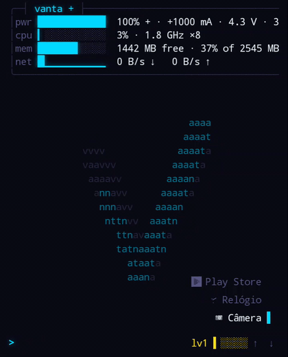
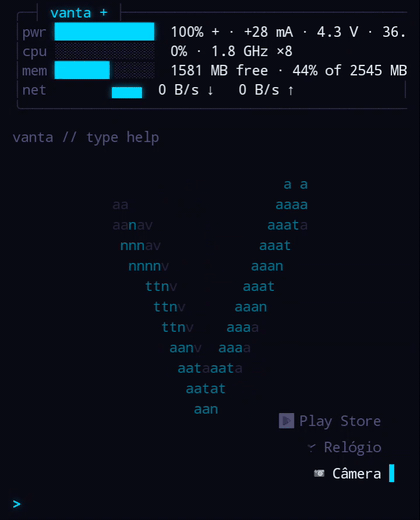
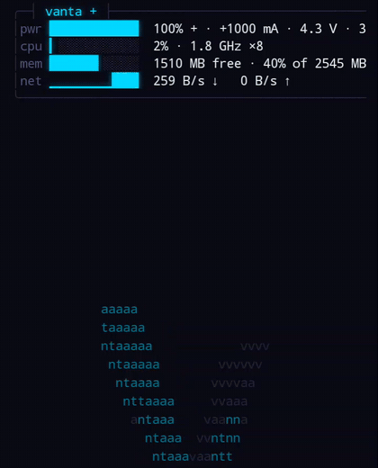
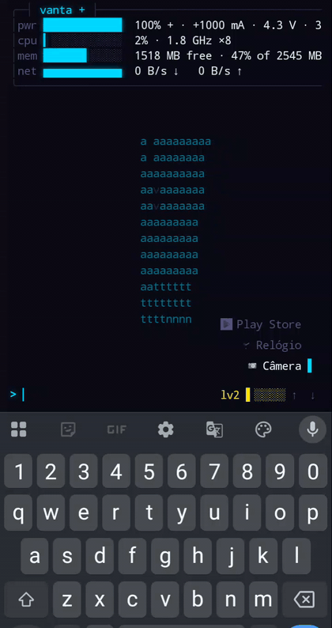
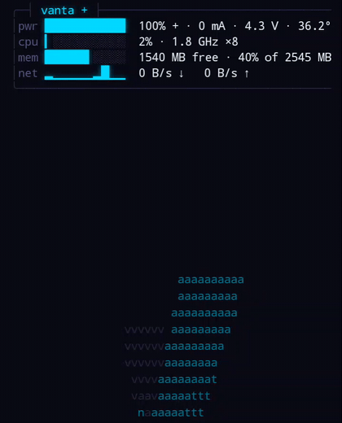
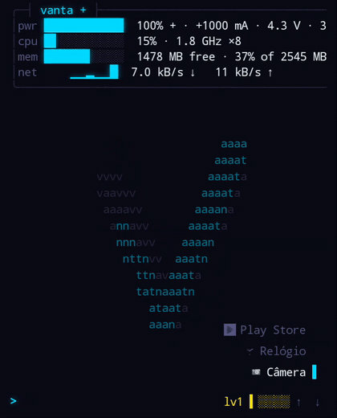

E se a tela inicial do seu Android fosse um terminal?
560 testes JVM27 ADRs0 permissões próprias Android 8.0+cold start ~300 ms
Vanta é um launcher Android escrito do zero em Kotlin — sem código herdado, sem fork, sem port. A aposta: um único prompt que encontra, calcula, executa e configura — sem modos, sem verbos obrigatórios, sem grade de ícones como centro do universo.
A busca resolve apps e telas de configuração juntos, ranqueados por uma única
política explicável — frequência e recência ajudam, mas nunca vencem o que você digitou.
Erros de digitação corrigem (distância de edição), acentos dobram
(camera → Câmera), e uma consulta solta só age sobre um match ancorado em início
de palavra — para opne virar sugestão de open, nunca "Sobre o
telefone".






spin off desliga.| comando | o que faz |
|---|---|
| go (g, find) | encontra e abre qualquer coisa pelo nome — é para onde toda linha desconhecida cai |
| open (o, launch) | força o domínio de apps |
| settings (set) | abre telas de configuração do sistema |
| calc (=) | aritmética explícita — implícita, qualquer expressão no prompt já responde |
| search (s) | entrega a consulta ao seu app de busca padrão |
| sh (run) | executa no toybox do aparelho — 196 applets, diretório persistente |
| termux (tx) | executa no Termux e imprime stdout, stderr e exit code aqui |
| note (n) | anota verbatim; sem argumento, lê o bloco |
| theme / hud / spin | configuração como texto: o que se mostra é o que se cola de volta |
| apps · battery · about · clear · cd · pwd · help | o resto do essencial — e o help é gerado das mesmas specs que o parser lê, então nunca mente |
O núcleo (comando, matching, render, cálculo) é JVM pura — parser total, ranking, temas, partículas e o giro 3D testados a zero fps em qualquer máquina.
Cada escolha de arquitetura documentada com o bug que a motivou — inclusive as decisões revertidas, que ficam marcadas como superadas, nunca apagadas.
A primeira versão do logo custava 96% de um núcleo a 1,82 GHz. Quatro rodadas de medição no aparelho depois: 21% no clock mínimo — e a conta virou commit.
Nenhuma coleta, nenhum tracker, nenhuma rede. A única permissão do manifesto pertence ao Termux — e fica inerte sem ele.
Lista de apps em cache com leitura autoritativa fora do caminho de partida; medido com baseline profile e método documentado (aquecer, compilar, medir).
Nada anima em loop escondido: faíscas nascem de teclas, o relógio de quadros para quando nada acontece, e tudo respeita a escala de animação do sistema.
Aliases e dotfiles (a configuração inteira exportável como texto), conversão de unidades no mesmo degrau da calculadora, domínios de contatos e arquivos, scripts com gatilhos — e a publicação na Play Store.
release v0.1.0 — assinada download público em breve